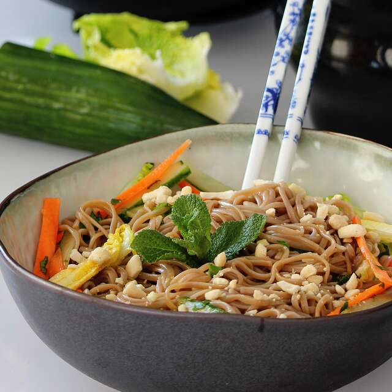

Noodle Bowls

Description
Such a light, crisp salad... especially on summer evenings! Everyone loves these noodle bowls.
Ingredients
- 1 (8 ounce) package dried cellophane (glass) noodles
- 1 cup peanuts
- 1 head heart of romaine lettuce, shredded
- 1 cucumber, cut into matchsticks
- 2 carrots, cut into matchsticks
- 1 cup mung bean sprouts
- 1 cup cilantro leaves, chopped
- 1 cup fresh mint leaves, slivered
- ½ cup chopped green onions
- ½ cup soy sauce, or to taste
- 1 teaspoon wasabi paste, or to taste
Steps
- Place noodles in a large bowl and cover with very hot water. Let stand until softened, about 15 minutes. Drain and chop into shorter lengths.
- Grind peanuts into a coarse, chunky meal using a food processor or mortar and pestle.
- Combine noodles, peanuts, lettuce, cucumber, carrots, bean sprouts, cilantro, mint, and green onions in a large bowl. Serve soy sauce and wasabi paste alongside.